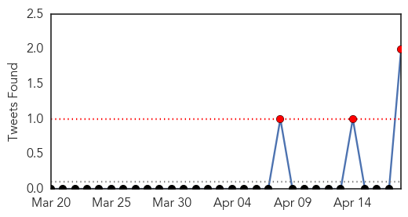
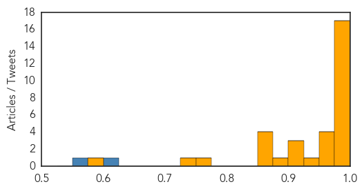

Unknown
30-Day Web Trend
0 alerts, 0 warnings

30-Day Twitter Trend
1 alerts, 0 warnings
Article Locations

Article Confidences
Top Articles:
- 0.999
- Another foreigner dies of MERS in Saudi
- 0.997
- MERS scare prompt checks
- 0.988
- Malaysia quarantines 64 villagers over MERS virus
- 0.988
- Malaysia quarantines 64 villagers after its first MERS death
- 0.960
- MERS: Manila plane passengers screened
- 0.950
- Polio Hits Equatorial Guinea, Threatens Central Africa
- 0.917
- Chicago Tribune
- 0.917
- Chicago Tribune
- 0.917
- Chicago Tribune
- 0.917
- Chicago Tribune
- 0.905
- Producers Ordered to Report Infections of Deadly Pig Virus
- 0.866
- Bomb blast in Cairo kills police officer -Egyptian state media
- 0.866
- S.Korea coastguard denies divers have entered capsized ship
- 0.866
- Third officer, not captain, at helm when S.Korean ferry capsized
- 0.866
- Jordanian warplanes destroy vehicles trying to cross from Syria-state TV
- 0.852
- School and nurseries asked to help curb scarlet fever outbreak
- 0.849
- Interview: Banana disease hard to control, says Mozambican authority - Xinhua
- 0.772
- Deadly viral disease MERS spreads from Middle East to Southeast Asia
- 0.762
- Southeast Asia on Alert After MERS Death
- 0.753
- Immune System Research May Help Predict Who Gets Long-Term Complications From Lyme Disease
- 0.737
- Chile: Monitoring Emergencies - Chile 4/17/2014
- 0.714
- Multiple sclerosis on the rise in the UAEHealthcare
- 0.703
- Federal government will track deadly pig virus
- 0.693
- Ukraine separatists say ‘not bound’ by Geneva deal
- 0.668
- West African Ebola outbreak caused by new strain of virus
- 0.663
- New MRSA Superbug Emerges In Brazilian Patient
- 0.653
- World honours Garcia Marquez’s magical literary legacy
- 0.653
- Ukraine: ‘One bloody incident could scupper Geneva deal’
- 0.652
- USDA to Require Pork Industry to Report Swine Virus
- 0.649
- Virus outbreaks in four Colorado prisons force limits on Easter visits
- 0.602
- Dozens of wedding guests stricken with norovirus
- 0.532
- USDA ups oversight of pig farms to combat deadly virus
- 0.527
- Emergency measures launched to contain water crisis in Tripura
Top Tweets:
-
No tweets found for Apr 18, 2014
MERS
30-Day Web Trend
8 alerts, 0 warnings

30-Day Twitter Trend
3 alerts, 0 warnings

Article Locations

Article Confidences
Top Articles:
- 1.000
- Spate of Mideast virus infections raises concerns
- 1.000
- DOH: Returning OFW no longer positive for MERS-CoV
- 0.999
- MERS-camel link confirmedHealthcare
- 0.999
- Spate of Mideast infections raises concerns
- 0.999
- Experts warn Mers virus may be mutating after sudden spurt in Saudi, UAE
- 0.999
- MERS Virus Bringing Back Memories, Fears Of SARS
- 0.999
- SARS revisited? Sharp jump in cases, hospital outbreaks raise MERS concerns
- 0.999
- WHO warns vs spread of MERS-Cov, urges vigilance in taking precautions
- 0.997
- WHO to meet with Saudi over MERS
- 0.997
- DH closely monitors five additional overseas MERS cases reported to WHO
- 0.996
- MERS outbreaks grow; Malaysian case had camel link
- 0.995
- WHO to meet with Saudi over MERS « The Majalla Magazine
- 0.995
- DoH denies Filipino nurse no longer positive for MERS virus
- 0.993
- The Voice of Russia: News, Breaking news, Politics, Economics, Business, Russia, International current events, Expert opinion, podcasts, Video
- 0.992
- USDA Requires Reporting of Swine Virus
- 0.992
- Saudis report 12 more MERS cases; Greece has its first
- 0.986
- DOH: No test results yet on MERS-CoV patients
- 0.971
- OFW from UAE no longer positive for MERS-CoV
- 0.970
- Greece reports first MERS coronavirus case
- 0.968
- SMS campaign fights MERSHealthcare
- 0.952
- Malaysia quarantines 15 people over respiratory disease
- 0.940
- US orders farms to report pig virus infections
- 0.919
- USDA Requires Monitoring Of Deadly Pig Virus
- 0.918
- MERS kills Riyadh woman; teachers monitoring pupils
- 0.907
- USDA orders farms to report pig virus
- 0.879
- The Daily Reflector
- 0.869
- UPDATE 1-USDA will require reporting of killer piglet virus PEDv
- 0.869
- USDA will require reporting of killer piglet virus PEDv
- 0.868
- USDA will require reporting of killer piglet virus PEDv
- 0.859
- USDA will require reporting of deadly pig virus PEDv
- 0.763
- USDA requiring reporting of deadly pig virus
- 0.748
- USDA makes PED a reportable disease
- 0.594
- Agriculture Secretary Tom Vilsack announces additional USDA actions to combat spread of diseases among U.S. pork producers
Top Tweets:
- 0.620
- RT: Saudi Arabia Ministry of Health reported six new MERS-CoV cases in Jeddah (April 18 2014 edited) http://t.co/l45SqYvwAH
- 0.553
- Nice MERS figures. RT: Our latest updates on MERS-CoV seasonal flu and more in the weekly threat report: http://t.co/KBDDaslUlt